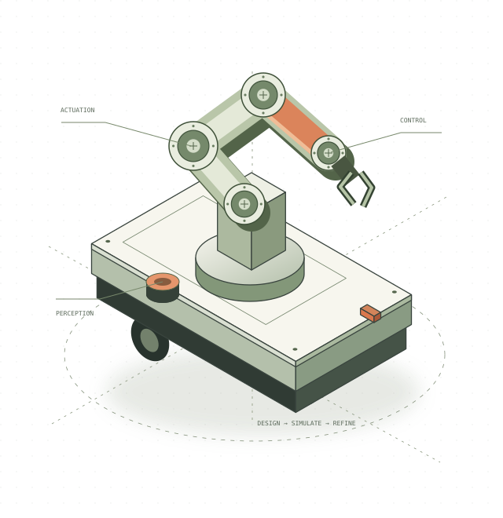
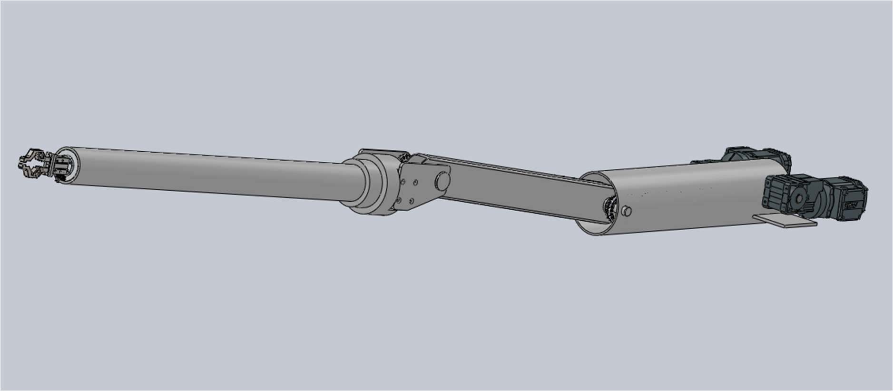
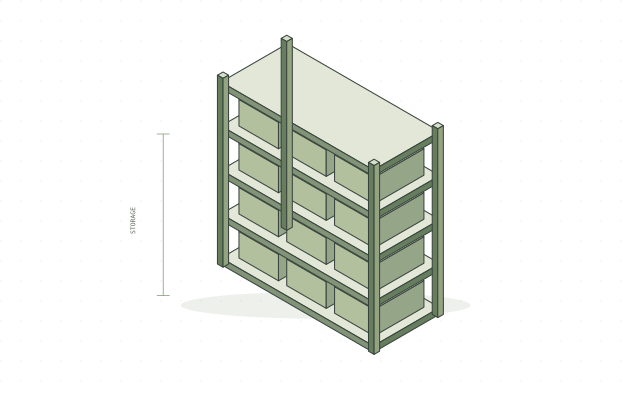
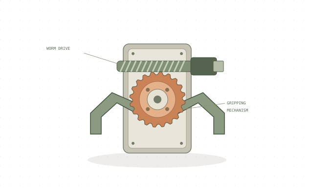
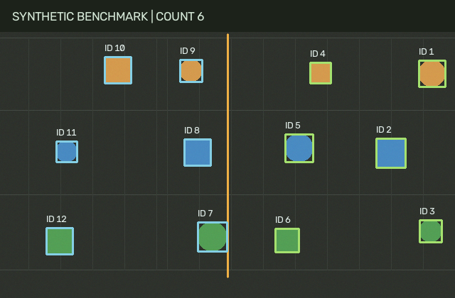
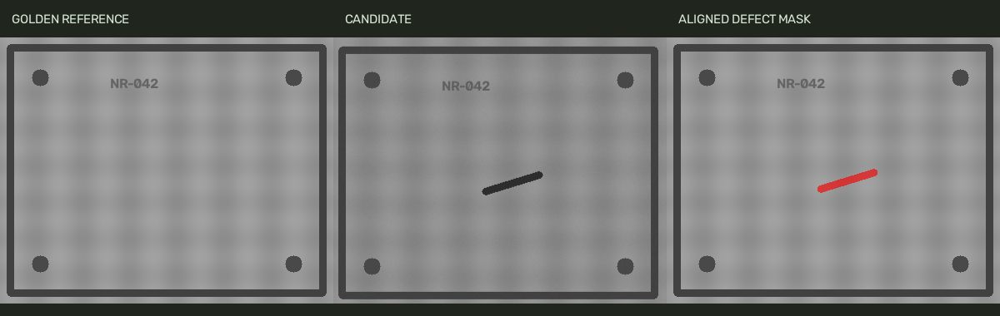

SCHEMATIC ILLUSTRATION
SCHEMATIC ILLUSTRATION
SEW-EURODRIVE Industry thesis
Crane anti-sway & servo control
Crane anti-sway and radar servo-drive control, explored through modelling, controller design and drive configuration.
STOCKHOLM, SWEDEN · KTH
Hi, I’m Nithyasri.
I’m a Mechatronics master’s student at KTH, connecting mechanical design, motion control and machine perception. I’m seeking an industrial thesis in Sweden for Spring 2027.
Download engineering portfolio PDF ↓ Master’s thesis · Spring 2027 · 30 ECTS
LEARNING THROUGH
REAL ENGINEERING.
01 / SELECTED WORK
Projects in mechanical design, motion control, robotics and computer vision. Explore their purpose, tools and approach.
SCHEMATIC ILLUSTRATION
Crane anti-sway and radar servo-drive control, explored through modelling, controller design and drive configuration.

Mechanical redesign, actuator selection and remote-control integration for a manipulator arm.

CONCEPT ILLUSTRATIONVertical carousel and AGV pallet designs, from concept through CAD and manufacturing drawings.

CONCEPT ILLUSTRATIONA worm-drive gripper concept for robotic part handling.

An OpenCV application for tracking parts and counting crossings along a conveyor.

Align a reference, correct lighting and localise scratches or spots in generated surface images.

Measure flat parts in millimetres after perspective correction, with known synthetic ground truth.

Fingertip targeting, pinch input and safe arithmetic, with a reproducible interaction replay.

A ROS 2 course project combining mobile navigation, arm kinematics and vacuum pick-and-place.
 CONCEPT ILLUSTRATION
CONCEPT ILLUSTRATION
Developing a warehouse transport robot from mechanical design to navigation in simulation.
An ongoing Python simulation project exploring warehouse-vehicle scenarios.
02 / EXPERIENCE
Industrial placements have taken me from mechanical design to drive commissioning. At KTH, I’m extending that foundation through mechatronics, robotics and teaching.
Download full CV PDFHelping students debug C assignments and understand pointers, memory management and embedded programming concepts.
Mechanical design for vertical carousel storage and AGV pallet concepts, including CAD, manufacturing drawings and assembly planning.
Bachelor’s thesis work on crane anti-sway and radar servo-drive control, including modelling, controller design, drive configuration and operator interfaces.
Contributed to automating a manually operated manipulator for a nuclear-plant application, specifying motors, drives and actuation mechanisms.
Contributed to conveyor redesigns for customer-specific material-handling applications.
03 / ABOUT & TOOLKIT
I’m Nithyasri, a Mechatronics master’s student at KTH in Stockholm, with a background in Robotics and Automation.
My experience spans mechanical design, industrial drives and control, robot simulation, and computer vision. I’m interested in how machines perceive their environment, decide what to do, and move safely through the real world.
I’m now exploring AI and reinforcement learning as directions for my master’s thesis. Alongside my studies, I support C programming students as a teaching assistant, helping them make sense of debugging, pointers and memory management.
KTH Royal Institute of Technology · Sweden
PSG College of Technology · India
SolidWorks · Fusion 360 · AutoCAD
DFMA · Manufacturing drawings · FDM printing
MATLAB · Simulink · P/PI control
MOVISUITE · MOVITOOLS · Siemens & Delta PLC
ROS 2 · Nav2 · Gazebo
Robot integration · Scenario simulation
Python · C · Embedded C · OpenCV
Linux · Bash · GUI development
BEYOND THE WORKBENCH
Festo P111 training in industrial pneumatics ↗ IEEE student leadership ↗ Interest in industrial automation
LOOKING AHEAD / MASTER’S THESIS 2027
THESIS START · SPRING 2027I’m seeking a master’s thesis with an industrial team in Sweden for Spring 2027, bringing practical experience in design, drives and simulation to robotics and autonomous systems.
Robotics and production automation
Perception and simulation for autonomous systems
Control and integration of mobile machinery
My interests connect CAD, industrial drives and Python applications with robotics and autonomous systems. AI and reinforcement learning are directions I would like to explore during my thesis.
Discuss a thesis opportunityTHESIS DIRECTIONS / SPRING 2027
Three starting points for a thesis discussion, grounded in the work above.
Explore actuator integration, controller evaluation or design for automated assembly.
Control-system experience ↗Product-design experience ↗Explore machine vision for inspection, measurement and autonomous systems.
Computer-vision projects ↗Scenario simulation ↗Study remote operation, motion control or material-handling systems, supported by simulation.
Manipulator integration ↗Ongoing robot simulation ↗TAKE A CLOSER LOOK
A concise CV and a visual portfolio with project descriptions, tools and engineering interests.
04 / LET’S CONNECT
I’d love to hear about your team and the problems you’re working on.
rajulu@kth.se